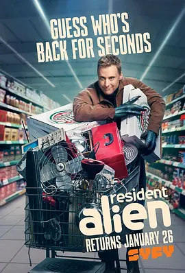

7.9
外星居民 第二季
Resident Alien Season 2
2022
美国
评分 7.9
导演:
罗伯特·邓肯·麦克尼尔
演员:
艾伦·图代克 / 艾利克斯·布斯汀 / 萨拉·汤科 / 爱丽丝·韦特兰德 / 梅雷迪思·加勒特森
类型:
剧情,喜剧,科幻
剧情简介
上一季的危机过后，哈利曾短暂离开地球，飞船掠过宇宙深处的黑暗。然而本季开场，他意外返回，却在坠落过程中遭受冲击，意识混乱，几乎忘记了自己是谁。失忆让他丢失了任务、身份与目的，只记得自己似乎属于某个遥远的故乡。唯一能让他保持一丝稳定的，是阿斯塔的存在。她成为他的引路人，牵着他在混乱的记忆和陌生的人类世界间重新寻找方向。小镇依旧风波不断。警长仍旧喜欢逞强，助理保持敏锐，小孩依旧能看穿哈利的伪装，每个日常情境都暗藏危险。哈利在“医生”身份下继续治疗病人，却经常因为不合逻辑的举动引来怀疑。他试图模仿人类的语气、肢体和表情，却又经常在关键时刻露出外星人的天然冷漠与奇怪幽默。与此同时，更大的威胁正悄然逼近。一个神秘组织开始追查外星生命的踪迹，他们的出现让哈利不得不面对曾被遗忘的使命。他的过去碎片时不时闪回，和阿斯塔一起走过的经历也让他愈发矛盾。在被追捕、被怀疑、被误解的过程中，他第一次真切感受到“被需要”的含义。本季在保持轻松节奏的同时，进一步探索了外星人和人类之间的纽带。哈利的失忆让他像一张白纸，在荒诞与危机之间重新认识世界。随着他记忆碎片逐渐拼合，他不得不再次面对那个古老而严肃的问题：地球，这样复杂又荒唐的地方，到底值得拯救吗？